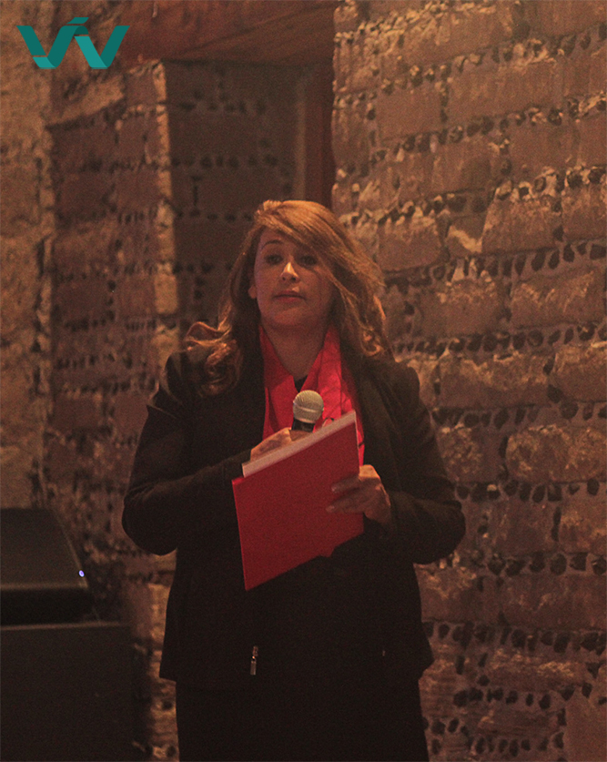

Con el desarrollo urbano en el Estado de Tlaxcala, surge la necesidad de contar con oferta en materia de desarrollo inmobiliario. En respuesta a esta necesidad, se constituye la empresa Construcciones Proyecta ARKA, una empresa con responsabilidad social, personal altamente capacitado y servicios de excelencia en desarrollo de vivienda, asesoria legal sobre bienes inmuebles y servicio de valuación.
La empresa tiene como líder a la Arq. Isabel Fierro Coronel, una destacada profesionista con más de 20 años de experiencia en el ramo de la contrucción, Presidenta en funciones del Colegio de Valuadores del Estado de Tlaxcala, y valuador certificado en INFONAVIT. Los servicios que se ofrecen son destacados en la excelencia, honestidad y profesionalismo, por lo que Contrucciones Proyecta ARKA se ha posicionada como una opción clara en el mercado.